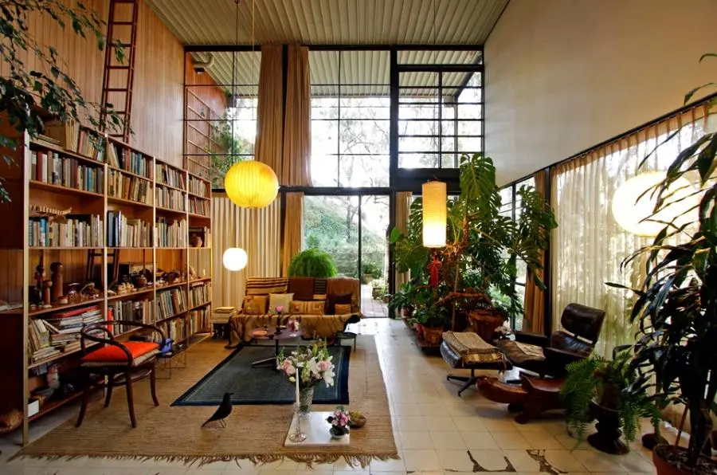
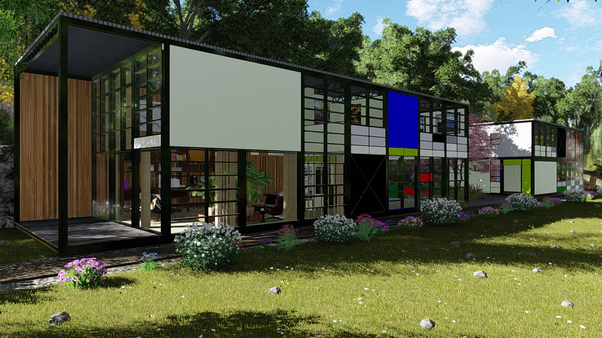

Qui sont-ils ?

Couple américain de designers industriels, ils se sont rencontrés en 1940 à l'academie d'art de Cranbrook.
Charles arrivera à l'academie sur recommandation de Eliel Saarinen et deviendra rapidement instructeur.
Ray quant à elle, viendra à l'academie afin de completer ces précédentes études à New York.
Ils se marieront en 1941.
L'agence de design Eames
En 1943 ils créeront leur agence de design à Los Angeles, une affaire qui marchera plus de 40 ans !
Les Eames travaillaient d'arrache pied, jusqu'à 13h par jour et 6 à 7 jours par semaine
mais cela à payé au regard de leur notoriété aujourd'hui et du patrimoine qu'ils nous ont laissés.
Le passage à l'architecture
Charles, en lien avec ses études à l'université de Washington dans un programme en architecture de 1936 à 1938, sera solicité pour la construction de deux églises dans l'Arkansas. Puis Ray le rejoindra, ils seront tout deux appelé sur de nombreux projets tel que leur propre maison (Eames House), mais aussi sur de nombreuses autres que nous vous laisseront découvrir lors de l'exposition.